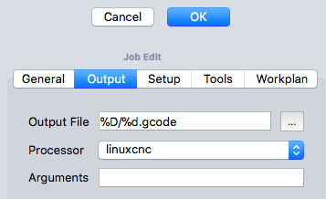
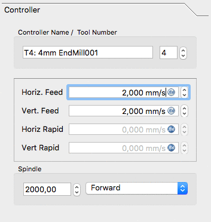
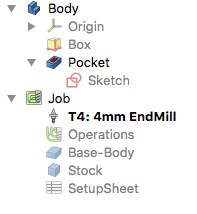

CAM Walkthrough for the Impatient
- Topic
-
Atelier CAM
- Level
-
Débutant/modéré
- Time
-
15 minutes
- Author
-
Chrisb
- Fcversion
-
0.19
Objectif
Démonstration de la création d’une tâche de l’ atelier CAM dérivé d’un modèle 3D, puis création du G-Code pour dialoguer avec une fraiseuse CNC cible.
atelier CAM dérivé d’un modèle 3D, puis création du G-Code pour dialoguer avec une fraiseuse CNC cible.
Le modèle 3D
1. Le projet commence par un simple modèle FreeCAD conçu dans  PartDesign, un cube avec une poche rectangulaire,
PartDesign, un cube avec une poche rectangulaire,
::

Au dessus: créé dans l’ atelier PartDesign incluant un Corps, une boîte avec une cavité, basée sur une esquisse orientée dans le plan XY.
atelier PartDesign incluant un Corps, une boîte avec une cavité, basée sur une esquisse orientée dans le plan XY.
2. Une fois le modèle 3D terminé, passez à l’ atelier CAM via le sélecteur d’atelier (menu déroulant)
atelier CAM via le sélecteur d’atelier (menu déroulant)
La tâche
3. Maintenant, nous créons une CAM Tâche par l’une des méthodes suivantes :
-
Appuyez sur le bouton
 Tâche dans la barre d’outils.
Tâche dans la barre d’outils. -
Utilisation du raccourci clavier P puis J.
-
En utilisant l’entrée du menu supérieur.

:: ;;
Ci-dessus: la fenêtre de dialogue de création de CAM Tâche
4. Cela ouvre une fenêtre de dialogue de création de tâche. Dans cette fenêtre de dialogue, cliquez sur OK pour accepter le corps comme modèle de base, sans modèle.
Configuration de la tâche
5. La fenêtre de dialogue de la tâche s’ouvre dans la fenêtre Tâche et la fenêtre de vue du modèle affiche le brut sous la forme de cube en filaire entourant le corps de base. L’onglet Configuration est sélectionné.
Sortie de la tâche
6. L’onglet Sortie définit le chemin du fichier de sortie, le nom, l’extension et le postprocesseur. Pour les utilisateurs avancés, les arguments du post-processeur peuvent être personnalisés (passez la souris pour afficher les info-bulles des arguments courants).
::

Ci-dessus : la fenêtre de dialogue Modifier de CAM Tâche avec l’onglet Sortie sélectionné
Outils
::

Ci-dessus : la fenêtre de dialogue Modifier de CAM Tâche avec l’onglet Outils sélectionné
7. Modifier l’outil Par défaut en le sélectionnant et en cliquant sur le bouton Edit. Cela ouvre la fenêtre d’édition du contrôleur d’outil.
::

Ci-dessus : la fenêtre de dialogue d’édition de CAM Tâche du sous-panneau du contrôleur d’outil
8. Le nom donné à l’outil et le numéro d’outil correspondent au numéro d’outil de la machine. Dans la fenêtre de dialogue (voir ci-dessus), c’est Tool Nr. 4. Le contrôleur d’outil est configuré pour des vitesses d’avance horizontale et verticale de 2mm/s et une vitesse de fraise de 2000 rpm.
9. Sélectionnez le sous-panneau Tool du contrôleur d’outil. Définissez le diamètre (et si vous souhaitez utiliser l’outil  CAM Simulateur de parcours plus tard : ajoutez un angle de tranchant et une hauteur de tranchant).
CAM Simulateur de parcours plus tard : ajoutez un angle de tranchant et une hauteur de tranchant).
::

Ci-dessus : la fenêtre de dialogue de CAM Tâche du sous-panneau "Outil" du contrôleur d’outil
10. Les valeurs seront confirmées avec OK.
Remarque : pour un accès facile, tous les outils peuvent être prédéfinis et sélectionnés dans le  Gestionnaire d’outils.
Gestionnaire d’outils.
Plan de travail
L’onglet Plan de travail est initialement affiché comme vide. Il est ensuite rempli par la séquence des opérations de tâche, des commandes particulières et des finitions de CAM. L’ordre de ces éléments est ordonné ici.
Cette arborescence apparaît après la configuration de la tâche une fois celui-ci déplié :
::

Les opérations d’usinage
11. Deux opérations seront ajoutées pour générer des parcours de fraisage pour cette tâche. L’opération Profilage crée un parcours d’usinage autour de la boîte et l’opération Poche crée un parcours pour la poche intérieure.
12. Pour l’instant, nous allons garder les choses simples. Le bouton  Profilage ouvre le panneau Profilage. Après avoir confirmé avec OK en utilisant les valeurs par défaut, le parcours d’usinage autour de l’objet est visible en vert.
Profilage ouvre le panneau Profilage. Après avoir confirmé avec OK en utilisant les valeurs par défaut, le parcours d’usinage autour de l’objet est visible en vert.
13. Sélectionner le bas de la poche puis le bouton  Poche ouvre la fenêtre Forme de la poche. Les valeurs par défaut de la géométrie de base, des profondeurs et des hauteurs sont utilisées, le sous-panneau Opération est sélectionné et le pourcentage de dépassement est défini sur 50.
Poche ouvre la fenêtre Forme de la poche. Les valeurs par défaut de la géométrie de base, des profondeurs et des hauteurs sont utilisées, le sous-panneau Opération est sélectionné et le pourcentage de dépassement est défini sur 50.
::

Ci-dessus: la fenêtre de dialogue Forme de poche avec le sous-panneau Operation sélectionné
14. Le motif est changé en "Offset" et l’opération de tâche est confirmée pour la configuration de la poche avec OK.
Le résultat est un modèle avec deux parcours d’usinage:
::

Ci-dessus: le résultat avec un modèle à deux trajectoires
Vérification des parcours d’usinage
Il existe deux manières de vérifier les parcours d’usinage créés. Le G-code peut être inspecté, notamment en mettant en évidence les segments de parcours d’usinage correspondants. Le processus de fraisage de la tâche d’usinage peut également être simulé pour illustrer les parcours d’outil optimisés, nécessaires aux géométries d’outil pour fraiser le brut.
Pour inspecter le G-code, utilisez l’outil  CAM Inspecter des commandes. La sélection des lignes de G-code correspondantes dans la fenêtre Inspection du G-code met en surbrillance des segments de parcours d’usinage individuels.
CAM Inspecter des commandes. La sélection des lignes de G-code correspondantes dans la fenêtre Inspection du G-code met en surbrillance des segments de parcours d’usinage individuels.
::

Ci-dessus: L’outil CAM Inspecter des commandes ouvre la fenêtre de dialogue Inspection G-Code
Démarrer la simulation en utilisant l’outil  CAM Simulateur de parcours .
CAM Simulateur de parcours .
Réglez la vitesse et la précision et lancez la simulation avec le bouton de lecture  .
.
::

Ci-dessus : Simulateur de parcours en cours
Si vous souhaitez mettre fin à la simulation, cliquez sur le bouton Annuler pour supprimer le brut créé pour la simulation. Si vous cliquez sur OK, cet objet sera conservé dans votre travail.
Post-traiter la tâche
La dernière étape pour générer le G-code pour la fraiseuse cible consiste à post-traiter la tâche. Cela envoie les G-codes dans un fichier pouvant être chargé sur le contrôleur de machine CNC cible. Pour appeler le post-processeur:
-
Sélectionnez l’objet Tâche dans la vue en arborescence
-
Sélectionnez l’outil
 CAM Post-traitement pour post-traiter le fichier. Cela ouvre une fenêtre de G-code permettant d’inspecter le fichier de sortie final avant son enregistrement.
CAM Post-traitement pour post-traiter le fichier. Cela ouvre une fenêtre de G-code permettant d’inspecter le fichier de sortie final avant son enregistrement.
::

Ci-dessus: la fenêtre G-Code permettant l’inspection du fichier de sortie final